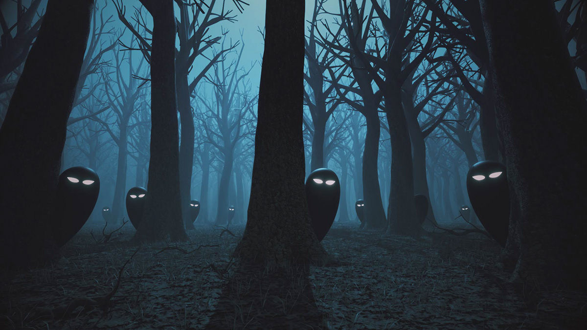

Hobby Horse Liga Legend
Witamy w naszym klubie!
Hobby horsing, czyli jeździectwo na drewnianych konikach, to pasja, która łączy miłość do koni, sportu i kreatywności. Nasza drużyna to zgrana grupa osób(nie jak IVY), które z entuzjazmem oddają się tej wyjątkowej dyscyplinie, biorąc udział w zawodach, treningach i wydarzeniach związanych z hobby horsingiem. Na tej stronie znajdziesz informacje o naszej drużynie, naszych osiągnięciach, nadchodzących wydarzeniach oraz wszystkim, co dotyczy tego pełnego emocji i radości sportu. Dołącz do nas i poznaj świat hobby horsingowego, który łączy ludzi w każdym wieku i o różnych zainteresowaniach!
Poznaj nasz zespół uwu
Agatka
Z sercem do rywalizacji, Agatka to osoba, która nieustannie rozwija swoje umiejętności. Dzięki swojej wytrwałości i pasji, jest nieocenionym wsparciem w każdej sytuacji, zarówno podczas treningów, jak i zawodów.
Karolinka
Z ogromną pasją podchodzi do treningów i rywalizacji. Zawsze uśmiechnięta, Karolinka wnosi do drużyny radość i pozytywne nastawienie. Jej zwinność i szybkość to cechy, które przydają się podczas każdej konkurencji.
Marcelinka
Pełna energii i zapału, Marcelinka to nasza liderka, która nie boi się wyzwań i zawsze motywuje resztę drużyny do działania. Dzięki jej kreatywności i determinacji nasza drużyna osiąga coraz lepsze wyniki na zawodach.
Zygfryd
Choć na pierwszy rzut oka może wydawać się poważny, Zykfryd to prawdziwy ekspert w swojej dziedzinie. Jego precyzja i techniczne podejście do hobby horsingu sprawiają, że jest niezastąpionym członkiem drużyny.
Poznaj nasze hobby horsy!
Polska Drużyna Hobbyhorse: Poznaj Naszych Wiernych Towarzyszy
Hobbyhorse to coraz popularniejszy sport, który łączy pasję do jeździectwa z kreatywnością i wytrwałością. W Polsce drużyna hobbyhorse wyróżnia się wyjątkowym zaangażowaniem i talentem, a każdemu z naszych końskich towarzyszy nadaliśmy niepowtarzalne imię, które odzwierciedla ich osobowości i charakter. Przedstawiamy cztery z nich, które są dumą naszej drużyny:
Błyskawica
Błyskawica to nasza najszybsza i najbardziej energiczna hobby horse. Zawsze pełna werwy, potrafi błyskawicznie reagować na sygnały swojego jeźdźca. Jej dynamiczny ruch i wyjątkowa zwinność sprawiają, że idealnie sprawdza się w konkurencjach wymagających precyzyjnego pokonywania przeszkód.
Złotka
Złotka to hobby horse, który charakteryzuje się łagodnym temperamentem i elegancją. Zawsze spokojna i opanowana, Złotka to doskonały partner do rywalizacji w konkurencjach, które wymagają cierpliwości i skupienia. Jej delikatna złota sierść symbolizuje grację i klasę.
Tornado
Tornado to koń o silnym charakterze i nieco buntowniczej naturze. Jest niezwykle ambitny i zawsze gotów stawić czoła największym wyzwaniom. Jego imponująca postura i niezwykła siła sprawiają, że Tornado jest doskonałym wyborem w trudniejszych zawodach, które wymagają odwagi i determinacji.
Księżniczka
Księżniczka to elegancka i dostojna hobby horse, której wygląd zachwyca każdego. Z subtelnym, ale pewnym krokiem, Księżniczka jest idealna do zawodów w stylu ujeżdżenia i precyzyjnego poruszania się w rytm muzyki. Jej wyjątkowa osobowość przyciąga uwagę, a jej wdzięk sprawia, że zawsze jest w centrum uwagi.
Każdy z naszych hobby horsów ma swój unikalny styl i osobowość, a razem tworzymy zgraną drużynę, która z pasją podchodzi do każdego wyzwania. Hobbyhorse to dla nas nie tylko sport, ale i sposób na wyrażenie siebie oraz naszą miłość do koni i jeździectwa.
Zapisy
Chcesz dołączyć do naszego klubu?
Musisz więc odbyć rytuał wstępu – o
godzinie 3:33 musisz
patatajować to lasu (jeszcze bez hobby horsa) aby upolować ładny kij na swojego hobby horsa.
Następnie należy narysowac kijem pentagram na ziemi i wysypać krąg z soli aby wywołać głowe
swojego konika. Po odśpiewaniu "Barki" po łacinie twój hobby horse powinien już działać.
Następnie należy uregulować klubową opłatę (666,66zł za miesiąc treningów(6 razy w tygodniu po 2
godziny)) oraz musisz wypełnić formularz!

Galeria
Oto kilka zdjęć z naszych treningów!
A oto nasi absolwenci!
Zawody
Nasza drużyna już teraz intensywnie trenuje, aby jak najlepiej przygotować się do tych wyzwań. Mamy nadzieję na kolejne sukcesy i niezapomniane wspólne chwile, które na długo pozostaną w naszej pamięci. Zachęcamy do śledzenia nas na bieżąco – będziemy dzielić się wszystkimi szczegółami dotyczącymi zawodów i wyników!
Zawody "Hobby Horse Cup 2024"
15-16 grudnia 2024, Warszawa, Stadion Miejski
To prestiżowe wydarzenie gromadzi drużyny z całej Polski, które będą rywalizować w różnych konkurencjach, takich jak skoki przez przeszkody, wyścigi na torze i freestyle. Nasza drużyna przygotowuje się do tych zawodów z pełnym zaangażowaniem, licząc na doskonałe wyniki i świetną zabawę!
Turniej "Hobby Riders Championship"
10-11 stycznia 2025, Kraków, Centrum Sportowe
Turniej, który przyciąga najlepszych zawodników w kraju, z wieloma emocjonującymi konkurencjami. To doskonała okazja, by zmierzyć się z topowymi drużynami i pokazać, jak wiele osiągnęliśmy przez ostatnie miesiące.
"Winter Hobby Horse Challenge"
22 lutego 2025, Gdańsk, Hala Sportowa
Zimowe zawody, które cieszą się ogromnym zainteresowaniem. W programie znajdą się m.in. konkurencje na torach przeszkód, a także specjalne wyzwania przygotowane przez organizatorów. Drużyna jest gotowa na zimowe emocje i liczymy na kolejne medale!
Konfundujące pytanya
Jak dołączyć? Wypełnij formularz w sekcji Zapisy.
Czy potrzebuję własnego hobby horsa? Nie, zapewnimy sprzęt na start!
Czy hobbyhorsing to bezpieczny sport? Otóż nie lmao.
Jak zbać o hobby horsa?
Regularnie patatajuj, traktuj go jak banana.